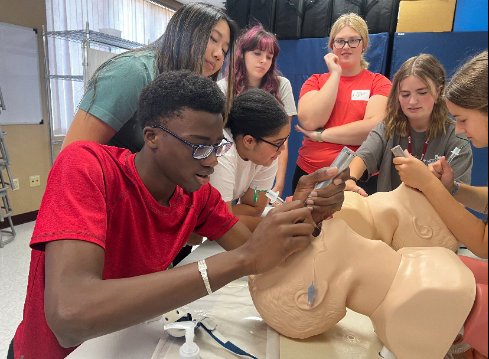

Clinical simulation
Airway management practice
I practiced positioning equipment and working carefully with an airway simulator. The station showed me how technique, communication, and reliable tools all matter during time-sensitive care.